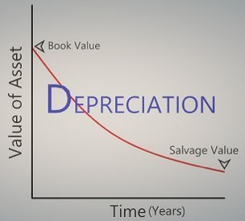
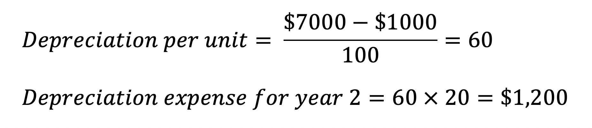

Asset Depreciation Calculation
Depreciation is defined as spreading the cost of a fixed asset over its useful.
Since
a fixed asset is used to generate income throughout its useful life (more than
twelve months) instead of only the year it was purchased, the matching principle
of accounting directs us to match the cost of asset to the income it has generated.
Hence, the cost of asset is divided over its useful life to allocate the cost
according
to the usage.
Depreciation is charged annually as a manufacturing expense in case of factory
building, plant and machinery and an operating expense in case of office building,
furniture or vehicles.
As per the International Accounting Standards (IAS) every entity must opt for a
depreciation policy as well as the depreciation rate. You can depreciate your
assets annually through any of the following most popular depreciation
methods.
1. Straight-line method:
It is a method that allocates the cost of asset evenly
throughout its life. It is used when an asset is used to generate income
fairly equally each year. The depreciation rate is charged at the initial cost
of the asset every otherwise the formula for calculating the annual
depreciation expense through straight line method is as follows:
The salvage value or residual/scrap value is the estimated amount that you
expect to recover at the time of disposal of the asset.
For example, the purchase price and salvage value of asset are $10,000 and
$1,000 respectively. The useful life if such asset is 5. The calculation of yearly
straight line depreciation is as follows:
2. Double declining method:
Double-declining method of depreciation is an
accelerated method of depreciation that allows you to write-off the cost of
asset by relatively larger amounts in the early years of its useful life as
compared to the later years. This method of depreciation is most suitable
when the asset’s capacity and production reduces overtime i.e. reducing
the income generated by such asset as well.
In this method the depreciation rate is multiplied by 2 (doubled) in order to
calculate depreciation expense at book value of asset. The annual depreciation
expense and the book value of the asset can be calculated as follows:
For example, an asset has a useful life of 5 years and a book value of $5,000 at
the
beginning of year 2. It has a straight line depreciation rate of 20%. Calculate
depreciation expense for year 2.

3. Units-of-production method:
In this method the life of the asset is spread
across its useful life in units i.e. the total number of unit it has the capacity to
produce. For example, a vehicle may have a certain number of hours that it
can use. We will use the following formula to calculate the annual production
expense using this method:
For example, an asset costing $7,000 and a residual value of $1,000 has a useful life of 100 units. What is its depreciation expense in year 2 if it produced 20 units?
